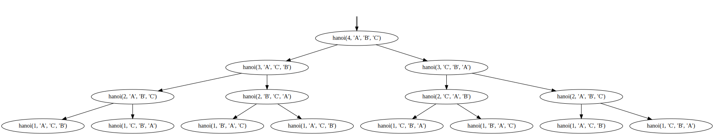
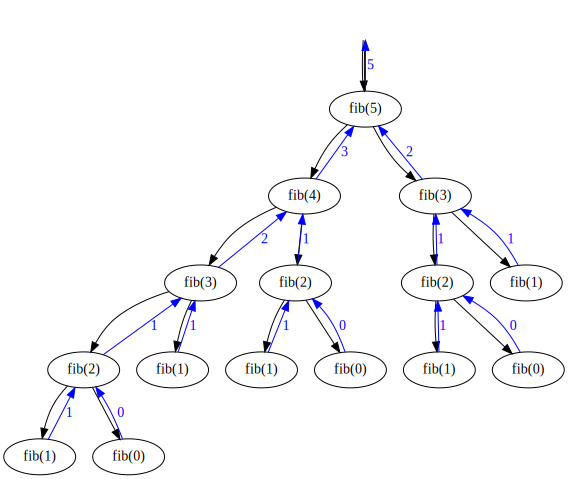

import logging
import graphviz
import re
import ipywidgets as widgets
from logging import StreamHandler
from functools import wraps, partialUnderstanding program structure and concepts like recursion can be challenging, especially for students just starting their coding journey.
To facilitate the understanding of program execution, I created a Python decorator that can log function calls, including the function name, input parameters, and return values.
In addition to a decorator for logging function calls, I also wrote a custom logging handler. This logging handler generates call graphs, providing a visualization of the function call hierarchy.
Finally, to further enhance comprehension of program flow, I’ll show how to animate these call graphs. By animating the call graphs, we can visualize the order in which functions are called.
Let’s dive in!
Importing libraries
We start by importing the necessary modules.
The standard way of doing logging in Python is by using the logging module, which is part of the Python standard library. This module is quite flexible and allows us to control the log levels, log formatting, log destinations, and more.
The decorator uses the wraps and partial functions from the functools module. The graphviz module is used to create the call graphs.
The logging decorator
In Python, decorators provide a powerful way of enhancing the behavior of functions or classes without having to make direct modifications to their source code. Decorators are indicated by the @ symbol followed by the name of the decorator function, and they are commonly placed immediately before the target function or class declaration.
A decorator is essentially a higher-order function that takes a function or class as input and returns a modified version of that function or class.
The function decorator I created is named fun_logger. Besides the calls and exits of a function, is also logs any exceptions that might occur. In addition, it logs the arguments and return value. It also keeps track of the indentation level for log messages which is incremented and decremented based on the nesting depth of function calls within the decorated functions.
def fun_logger(func=None, *, logging=logging, indent=' ', exit=False):
if func is None:
return partial(fun_logger,logging=logging, indent=indent, exit=exit)
global indent_level
indent_level = 0
@wraps(func)
def wrapper(*args, **kwargs):
global indent_level
args_repr = [repr(a) for a in args]
kwargs_repr = [f"{k}={v!r}" for k, v in kwargs.items()]
signature = ", ".join(args_repr + kwargs_repr)
logging.debug(f"function {func.__qualname__} called with args {signature}", extra={
'func': func.__qualname__,
'args_': args,
'kwargs': kwargs,
'indent': indent_level * indent,
'indent_level': indent_level
})
try:
indent_level += 1
result = func(*args, **kwargs)
except Exception as e:
logging.exception(f"function {func.__qualname__} raised exception {str(e)}", extra={
'func': func.__qualname__,
'exception': e,
'indent': indent_level * indent,
'indent_level': indent_level
})
if indent_level > 0:
indent_level -= 1
raise e
if indent_level > 0:
indent_level -= 1
if exit:
logging.debug(f"function {func.__qualname__} exited with result {result}", extra={
'func': func.__qualname__,
'result': result,
'indent': indent_level * indent,
'indent_level': indent_level
})
return result
return wrapperThe decorator can be used with or without arguments.
Like most function decorators it returns a wrapper function that calls the original function while adding additional functionality. In this case the wrapper function does the following:
- The function’s arguments and keyword arguments are converted into string representations.
- A debug log message is logged, including the function’s name and arguments.
- The wrapped function is executed within a try-except block.
- If an exception occurs, an exception log message is logged. After this, the exception is re-raised to maintain the original behavior.
- If no exception occurs, a debug log message may be logged to indicate the function’s exit and result. Finally, the result of the wrapped function is returned.
The logging handler
A logging handler in the Python logging framework processes log records generated by the application and sends them to the desired output destination. It captures, filters, formats, and routes log records, enabling control over where and how logs are stored or displayed.
The fun_logger decorator introduced above generates log records for every decorated function call. We can print those log records. What we want however, is to turn these log records into a call graph. For this we can create a custom logging handler that processes the log records and produces the graph.
class CallGraphHandler(StreamHandler):
"""
A handler class which allows the drawing of call graphs
"""
def __init__(self, name=None, comment=None):
StreamHandler.__init__(self)
self.name = name
self.comment = comment
self.gv = graphviz.Digraph(name, comment)
self.clear()
@property
def source(self):
return self.gv.source
def clear(self):
self.gv.clear()
self.nodes = []
self.edges = []
self.stack = []
# insert empty node
self.gv.node('start', label='', shape='none')
def emit(self, record):
if hasattr(record, 'indent_level'):
current = None
while len(self.stack) > record.indent_level:
current = self.stack.pop()
if hasattr(record, 'args_'): # A function was called
args_repr = [repr(a) for a in record.args_]
kwargs_repr = [f"{k}={v!r}" for k, v in record.kwargs.items()]
signature = ", ".join(args_repr + kwargs_repr)
node_id = str(len(self.nodes))
self.gv.node(node_id, f"{record.func}({signature})", fontcolor='black', color='black')
self.nodes.append(node_id)
self.stack.append(node_id)
if len(self.stack) == 1:
self.gv.edge('start', node_id, fontcolor='black', color='black:black')
else:
self.gv.edge(self.stack[-2], node_id, fontcolor='black', color='black')
if hasattr(record, 'result'): # A function returned
if len(self.stack) == 0:
self.gv.edge(current, 'start', fontcolor='blue', pencolor='blue', labelfontcolor='blue', color='blue', label=str(record.result))
else:
self.gv.edge(current, self.stack[-1], fontcolor='blue', pencolor='blue', labelfontcolor='blue', color='blue', label=str(record.result))
if hasattr(record, 'exception'): # An exception occurred
if not current:
current = record.exception.__class__.__name__
self.gv.node(current, shape='diamond', fontcolor='red', pencolor='red', labelfontcolor='red', color='red')
self.gv.edge(self.stack[-1], current, fontcolor='red', pencolor='red', labelfontcolor='red', color='red')This custom logging handler class does the following:
- The
CallGraphHandlerclass inherits fromStreamHandler, which is a built-in logging handler that sends log records to a specified output stream (e.g., stdout). Instead of sending log records to an output stream, we will build a Graphviz DOT string that can be displayed or saved to file. - The
__init__method initializes theCallGraphHandlerobject. It takes optional arguments for a name and comment for the resulting Graphviz plot and sets them as attributes. It also initializes an amptygraphviz.Digraphobject. - It has an
emit()method that is called when a log record is emitted to the handler. It processes the log record and updates the call graph accordingly. Depending on the contents of the log records it will add nodes and/or arrows to the call graph indicating a call, a function return, or an exception. - The
clear()method clears the call graph.
Using the decorator and logging handler
We firstly create a new object based on the Logger class that we’ll write our log messages to.
logger = logging.getLogger(__name__)
logger.setLevel(logging.DEBUG)The log level is set to DEBUG.
We’ll write logging records to both a StreamHandler and a CallGraphHandler. We’ll initialize the StreamHandler first. This will output the log records to stdout.
stream_handler = logging.StreamHandler()
formatter = logging.Formatter('%(indent)s%(message)s')
stream_handler.setFormatter(formatter)
logger.addHandler(stream_handler)We define a custom log format so that an indentation (%(indent)) is added to show the call depth. If we don’t do this all log messages will be left-aligned. The stream_handler is added to the logger object.
Next we initialize a CallGraphHandler object and add it to logger object as well.
call_graph_handler = CallGraphHandler("Call graph", "An example call trace of a recursive function")
logger.addHandler(call_graph_handler)Tower of Hanoi
The Tower of Hanoi problem has an elegant recursive solution that breaks down the problem into subproblems and using recursion to solve them. Let’s see what its logging output looks like.
@fun_logger(logging=logger)
def hanoi(n, source, destination, helper):
if n==1:
print("Move disk 1 from peg", source, "to peg", destination)
return
hanoi(n-1, source, helper, destination)
print("Move disk", n, "from peg", source, "to peg", destination)
hanoi(n-1, helper, destination, source)Note how we have added the decorator and given it our logger object.
Now we’re ready to call the function. In this case we tell it to produce a solution for four disks.
n = 4 # number of disks
hanoi(n, 'A', 'B', 'C')function hanoi called with args 4, 'A', 'B', 'C' function hanoi called with args 3, 'A', 'C', 'B' function hanoi called with args 2, 'A', 'B', 'C' function hanoi called with args 1, 'A', 'C', 'B' function hanoi called with args 1, 'C', 'B', 'A' function hanoi called with args 2, 'B', 'C', 'A' function hanoi called with args 1, 'B', 'A', 'C' function hanoi called with args 1, 'A', 'C', 'B' function hanoi called with args 3, 'C', 'B', 'A' function hanoi called with args 2, 'C', 'A', 'B' function hanoi called with args 1, 'C', 'B', 'A' function hanoi called with args 1, 'B', 'A', 'C' function hanoi called with args 2, 'A', 'B', 'C' function hanoi called with args 1, 'A', 'C', 'B' function hanoi called with args 1, 'C', 'B', 'A'Move disk 1 from peg A to peg C
Move disk 2 from peg A to peg B
Move disk 1 from peg C to peg B
Move disk 3 from peg A to peg C
Move disk 1 from peg B to peg A
Move disk 2 from peg B to peg C
Move disk 1 from peg A to peg C
Move disk 4 from peg A to peg B
Move disk 1 from peg C to peg B
Move disk 2 from peg C to peg A
Move disk 1 from peg B to peg A
Move disk 3 from peg C to peg B
Move disk 1 from peg A to peg C
Move disk 2 from peg A to peg B
Move disk 1 from peg C to peg BBesides the output caused by the print statements in the function itself, the stream_handler object also writes to the stdout.
Showing the call graph
The stream_handler writes directly to stdout. To visualize the call graph we need to get the Graphviz DOT string from the call_graph_handler object, create a Graphviz object and display it.
graph = graphviz.Source(call_graph_handler.source)
graph
Clearing the call graph
Once we’ve created our Graphviz object we can clear the Graphviz string in the call_graph_handler object.
call_graph_handler.clear()If we skip this step subsequent function calls will be drawn in the same Graphviz image.
Fibonacci sequence
Our next example will be the famous Fibonacci sequence. The following function will return the nth Fibonacci number.
@fun_logger(logging=logger, exit=True)
def fib(n):
if n in [0, 1]:
return n
return fib(n - 1) + fib(n - 2)Again we add the decorator. Because we’re also interested in the return values of the function we set exit=True. This will cause the decorator to also output logging records when the function exits.
fib(5)function fib called with args 5 function fib called with args 4 function fib called with args 3 function fib called with args 2 function fib called with args 1 function fib exited with result 1 function fib called with args 0 function fib exited with result 0 function fib exited with result 1 function fib called with args 1 function fib exited with result 1 function fib exited with result 2 function fib called with args 2 function fib called with args 1 function fib exited with result 1 function fib called with args 0 function fib exited with result 0 function fib exited with result 1 function fib exited with result 3 function fib called with args 3 function fib called with args 2 function fib called with args 1 function fib exited with result 1 function fib called with args 0 function fib exited with result 0 function fib exited with result 1 function fib called with args 1 function fib exited with result 1 function fib exited with result 2function fib exited with result 55Again we see the log messages.
Showing the call graph
Let’s show the call graph.
graph = graphviz.Source(call_graph_handler.source)
graph
Because we also logged the function exits, the call graph includes blue edges that show the return values.
Animating the call graph
By tracing the arrows, first traversing the left subtree and then the right subtree of each node starting with the root node, we can figure out the call sequence. A somewhat hacky way of animating this call order is taking the Graphviz DOT string and update the colors of the nodes and edges. The nodes and edges in the DOT string we get from the call_graph_handler all have the color black, blue, or red (in case of an exception). We can create ‘frames’ by setting a certain number of colors to lightgray starting from the end of this DOT string. How many colors we set to lightgray depends on the ‘frame’ we’re in.
dot = call_graph_handler.sourceframes = dot.count("color=")
slider = widgets.IntSlider(
value=0,
min=0,
max=frames,
step=4,
orientation='horizontal',
readout=False
)
output = widgets.Output()
def on_value_change(change):
with output:
output.clear_output(wait=True)
grey_dot = re.sub("([ \]]).*?=roloc", "\\1yergthgil=roloc",dot[::-1], frames-slider.value)[::-1] if frames-slider.value > 0 else dot
graph = graphviz.Source(grey_dot)
display(graph)
slider.observe(on_value_change)
on_value_change(None)The [::-1] part reverses the DOT string so the regular expression can substitute from the back to the front of the string. Note how in the regular expression yergthgil=roloc is color=lightgrey spelled backwards. We use a slider to set the frame number. We set the stepsize in the slider to 4 because that’s how many colors are updated in each frame.
I told you it was hacky.
display(slider, output)Clearing the call graph
For good practice we clear the call graph again.
call_graph_handler.clear()If you actually want multiple calls to appear in the same call graph you can skip this step.
It’s important to note that only functions that are decorated will appear in the graph. Say you have a function foo that calls function bar that calls function baz and you only decorate foo. Only calls to foo will be drawn in the call graph. To include bar and baz you’ll have to decorate them as well.
Logging your own functions
If you want to try this on your own functions you can grab the source code from here.
Happy coding!